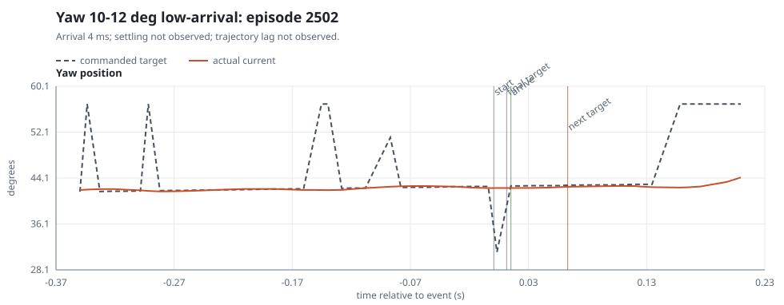
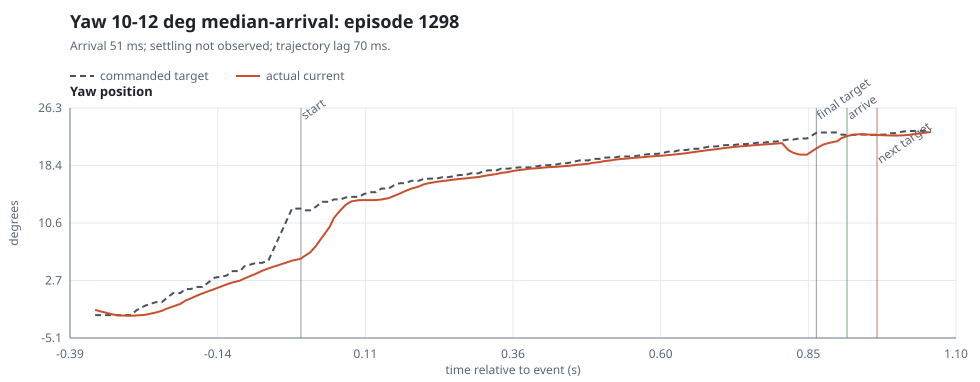

This page isolates the yaw 10-20 deg magnitude band because its aggregate arrival and settling values are outliers. The table breaks the band into 2 deg bins and explicitly counts finite arrivals below 50 ms, which are suspicious in this data set.
For each 2 deg bin, the plots show the lowest-arrival, median-arrival, and highest-arrival finite examples. The captions include target shape and hold-time fields so ramp-like episodes, short holds, and near-final-target artifacts can be spotted quickly.
2 Degree Summary
magnitude_bin
episodes
step_like_n
arrival_n
arrival_lt_50ms_n
arrival_median_ms
arrival_ge_50ms_median_ms
settling_n
settling_median_ms
trajectory_lag_n
trajectory_lag_median_ms
target_update_count_median
target_largest_step_fraction_median
duration_median_s
target_hold_lt_200ms_n
10-12 deg
91
33
26
13
45.62
86.74
9
144.12
60
55.00
3.000
0.6932
0.1992
82
12-14 deg
64
15
18
12
19.20
113.70
12
129.19
55
50.00
4.000
0.5479
0.3079
55
14-16 deg
70
37
20
13
8.966
127.93
10
274.88
39
50.00
1.000
1.000
0.1498
60
16-18 deg
77
39
28
20
8.389
136.51
16
108.36
45
50.00
1.000
1.000
0.1529
64
18-20 deg
54
16
27
21
12.68
142.76
11
291.22
39
55.00
3.000
0.6473
0.4254
44
Example Time Series

low-arrival, episode 2502: 31.23 deg to 42.74 deg (11.51 deg), arrival 4 ms, settling not observed, trajectory lag not observed, duration 0.011 s, target held 51 ms, target updates 1, largest-step fraction 1.00, step-like=1.

median-arrival, episode 1298: 12.31 deg to 22.93 deg (10.62 deg), arrival 51 ms, settling not observed, trajectory lag 70 ms, duration 0.865 s, target held 102 ms, target updates 43, largest-step fraction 0.06, step-like=0.